Process
Her process included doodling and sketching to explore width, weight, and proportions, to fill the space as much as possible, while proofing through handmade self-deprecating signs. This playful application improved Disway's legibility from a distance, while preserving its fearless personality.
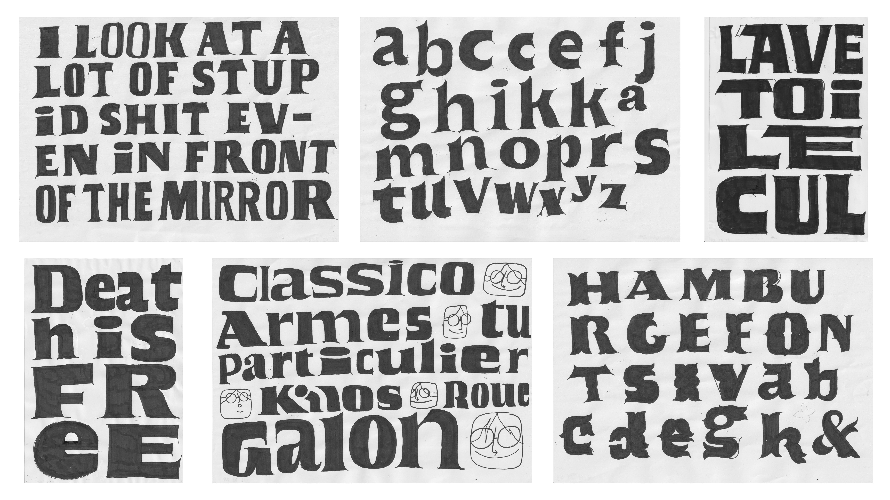
23/02/2024 to 13/03/2024. Spontaneous sketches inspired by friends and family punchlines. Apparently, wanting to design something that plays with brush calligraphy details, weight and widths in relation with the format.
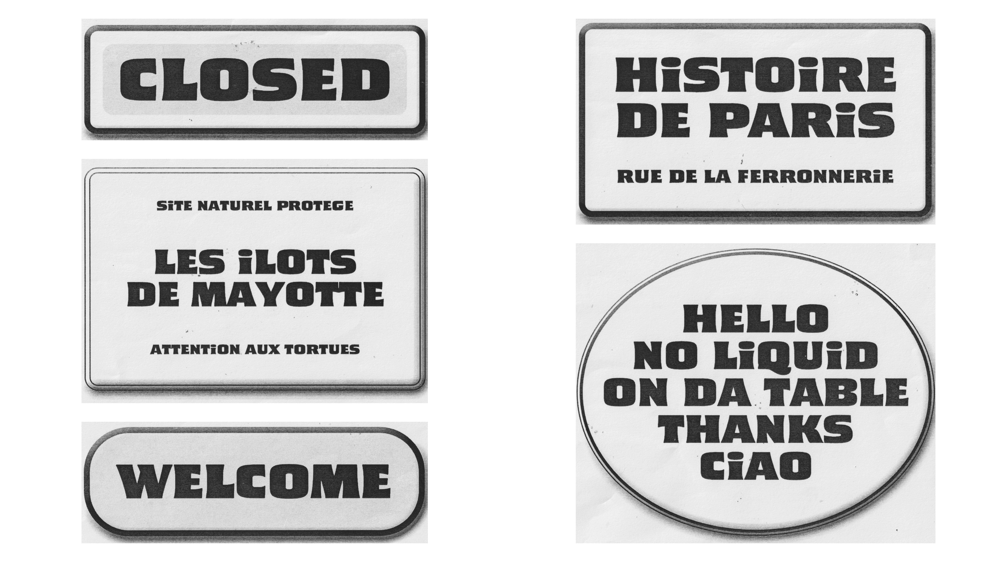
01/03/2024. Feedback from Frank Grießhammer. First digitalization, that brought up a problem: is this project going to be an imitation of enamel panels and Roger Excoffon’s work? Spoiler alert, hell no, we can do better than that.
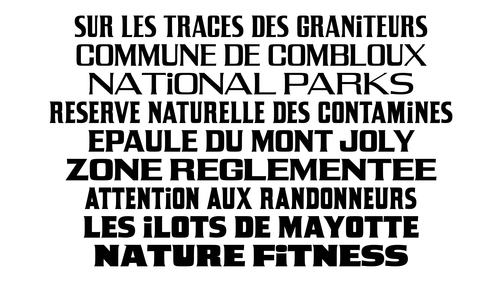
04/04/2024. First design space, with 4 masters (Narrow high contrast, Narrow low contrast, Wide High contrast, Wide Low contrast). Building up the « Typeface for hiking signs » narrative for the upcoming Berlin Type Crit. Their feedback was to draw less rigid, more sassy, more convincing shapes.
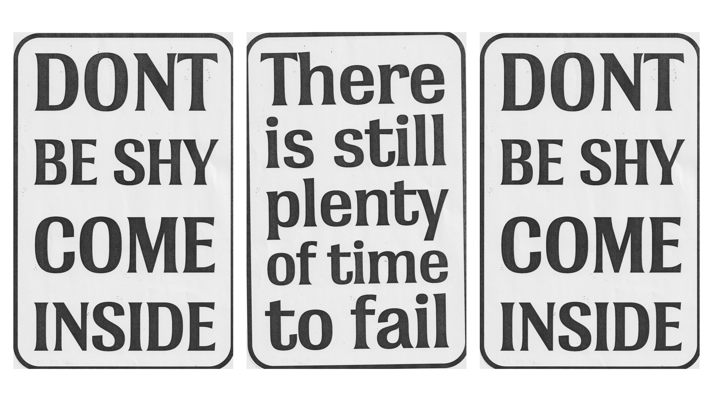
11/04/2024. Exploration and test of printed signs in the studio. Deciding to focus on one master at a time, to allow myself to slowly define the design, and keep learning and improve my questionable skills.
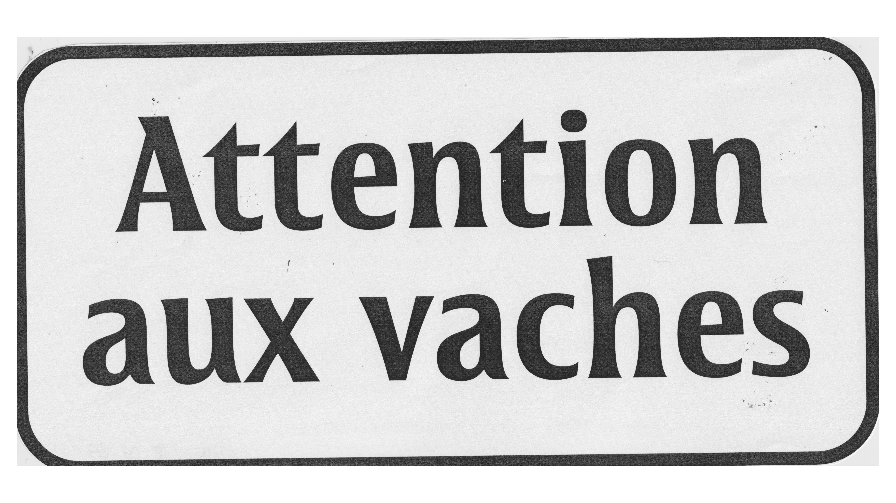
18/04/2024. More exploration and testing of printed signs in the studio. Lowering the contrast and taming down the spiky terminals to improve legibility at a certain distance.
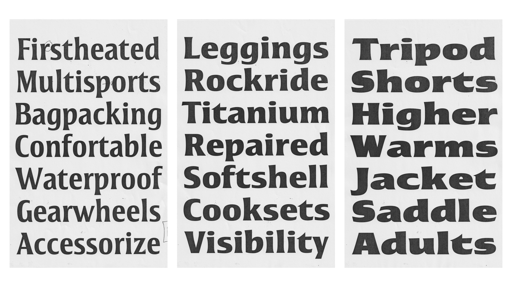
19/04/2024. Starting the Extra Bold master, just by pulling the points on the left and right side, and adjusting the contrast, to save time and allow myself to complete the rest of the design space in time.
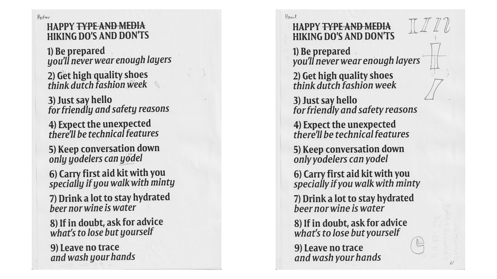
10/05/2024. Starting the Italic to match the Regular. The first design space had to be changed: instead of drawing 4 romans, it became 2 romans and 2 italics. Again, to keep learning, and improving my questionable skills
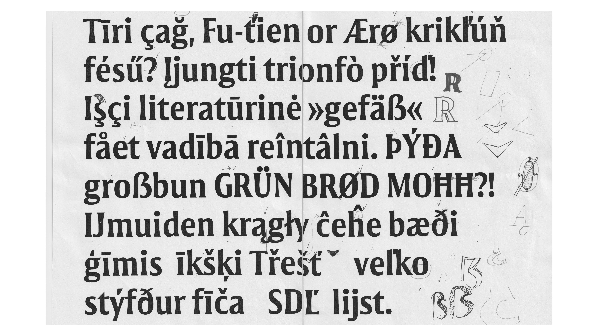
13/05/2024. Feedback from Aleksandra Samuļenkova. A lovely workshop about shapes you’re not used to drawing and to question the overall design through that.
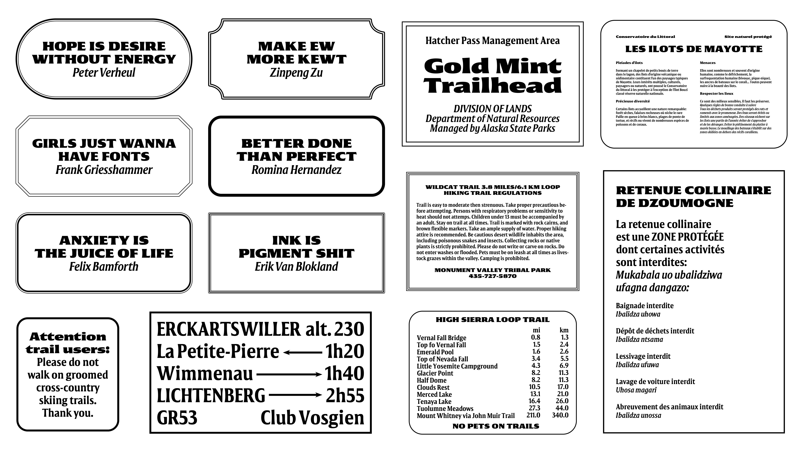
14/05/2024. Feedback from Céline Hurka. Gathering archive material of hiking signs to better understand the constraints and the needs, and proof the typeface. Since the beginning of the second semester, the project file was named « Da-project », that day it felt natural to name the typeface « Disway ».
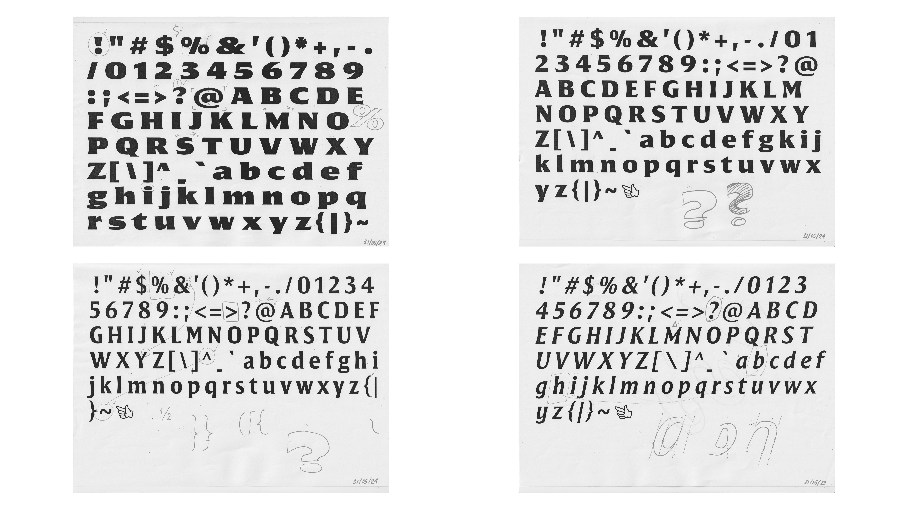
31/05/2024. Feedback from Paul Barnes. Harmonizing the color between straight and round letter. The shoulders are now heavier to match better the flared serifs, the contrast is lower and more in translation.
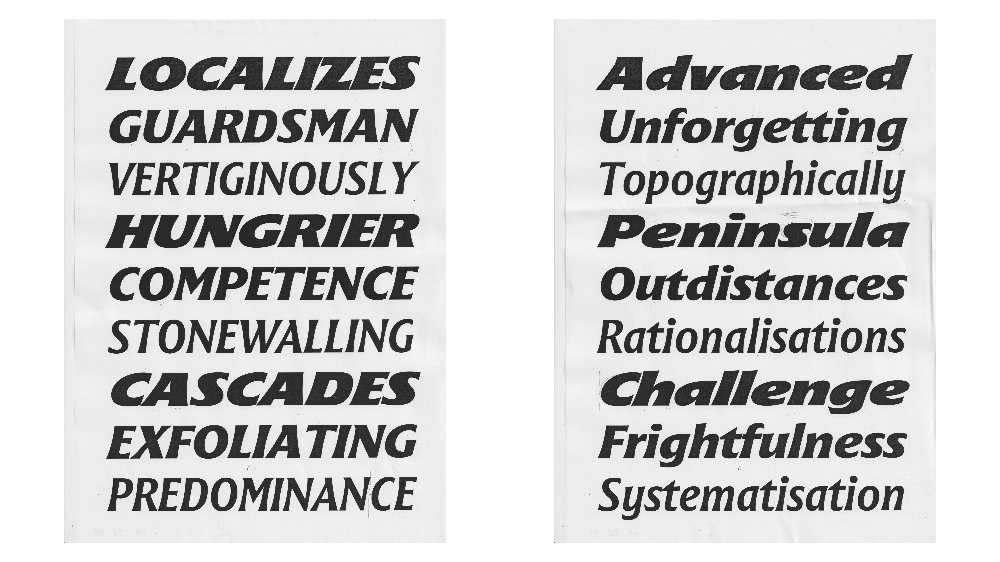
04/06/2024. Starting the Extra Bold Italic, matching it with the rest of the family by meeting the same parameters, so everything goes together as a strong family.
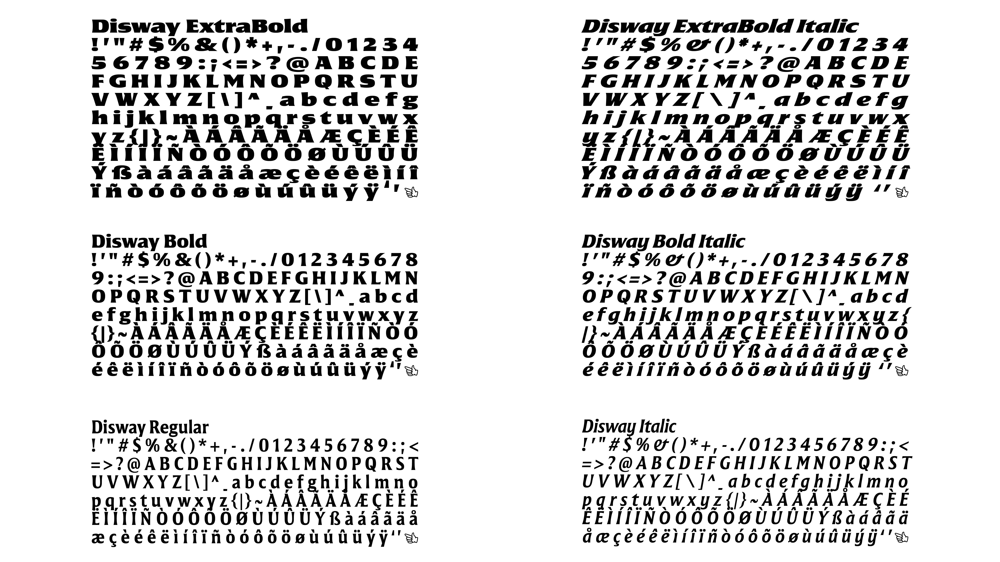
16/06/2024. Disway in its final state before the Exam Presentation a few days later: 4 masters, 2 interpolated styles, 164 characters (ASCII + French accents and a few extra things).
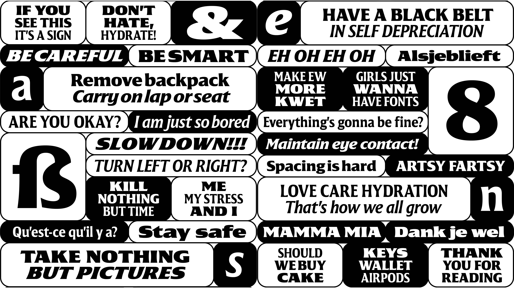
27/06/2024. A glimpse of Disway Graduation Exhibition poster, a compilation of hiking signs and Peter Verheul’s tough love. The teachers joked that I was trying to find my way through this project. And they were so damn right, as fucking always.
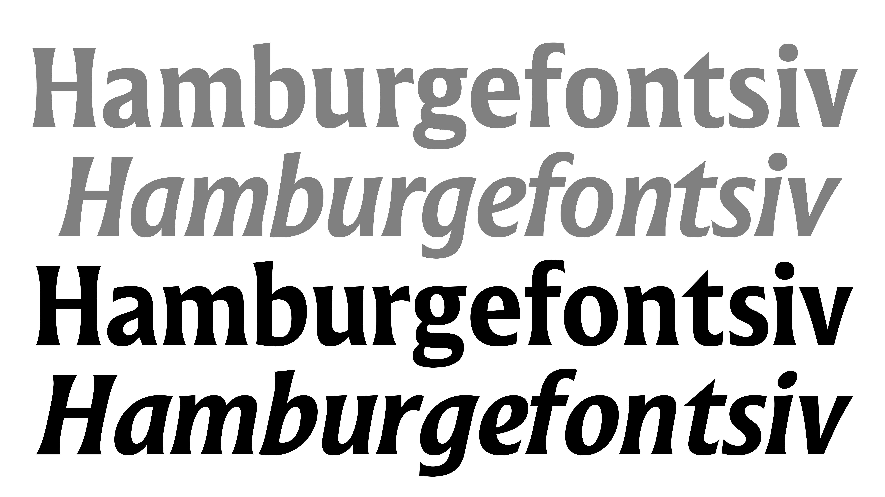
28/06/2025. After Type and Media, Disway got the honor to be (soon) released on July Type. As Edward said so well, it needed a massage, so we’ve been working together to draw everything from scratch, strengthen the design, and make it more cohesive. Hope you’ll like it!